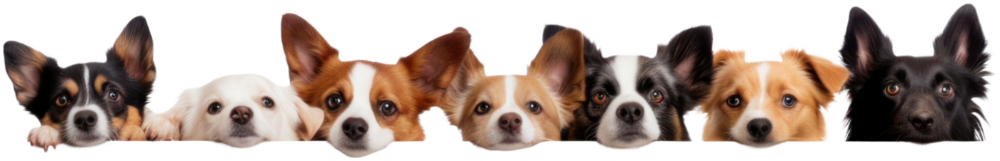

A Animalis oferece atendimento veterinário acolhedor, com estrutura preparada para cuidar de cães e gatos em todas as fases da vida.

© 2026 Animalis Clínica Veterinária. Todos os direitos reservados.
Atendimento mediante agendamento para consultas, vacinas, exames e acompanhamento clínico.

Avaliação clínica cuidadosa para orientar prevenção, diagnóstico e tratamento com segurança.
Na Animalis, cada consulta é conduzida com atenção ao histórico, aos sintomas e à rotina do pet. Nosso objetivo é oferecer um atendimento claro, acolhedor e resolutivo para cães e gatos em diferentes fases da vida.
Durante o atendimento, avaliamos sinais clínicos, orientamos os tutores e, quando necessário, indicamos exames complementares, vacinas, internação ou encaminhamento cirúrgico, sempre com foco no bem-estar do animal.
Quando o caso exige intervenção, contamos com estrutura para procedimentos e acompanhamento responsável no período de recuperação.
Também oferecemos suporte aos tutores com orientações claras sobre cuidados, medicação e retorno clínico.
A Animalis oferece atendimento veterinário acolhedor, com estrutura preparada para cuidar de cães e gatos em todas as fases da vida.
© 2026 Animalis Clínica Veterinária. Todos os direitos reservados.